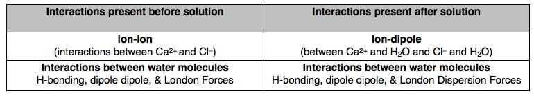

| Chapter 6.4: Free energy and solubility |
If you add NaCl to water (you can do this
at the dinner table), the NaCl will dissolve and the temperature
of the solution goes down. Is this always the case with all salts? – again,
sadly enough, it is not. If you dissolve calcium chloride (CaCl2)
or magnesium chloride (MgCl2), compounds commonly used
to prevent ice formation on roads, the solution gets warmer - not
colder. Dissolving CaCl2 or MgCl2 in water
clearly involves some kind of energy release, if the temperature
increases, the average kinetic energy of the molecules in the solution
will have increased. |
6.1 Solutions |
| Since both processes occur (all these compounds are highly soluble in water),
the ΔG’s for the formation of all three solutions must be negative. Let us begin with calcium chloride: as a crystal of CaCl2 dissolves in water, interactions between ions are broken and new interactions between and water molecules and ions and formed. The table below lists the types of interactions involved in the crystal and the solvent. Within the crystal, there are ion-ion interaction while in the solvent there are H-bonding, dipole-dipole, and van der Waals interactions. As the crystal dissolves, new ion-dipole interactions between calcium ions and water molecules, and between chloride ions and molecules form. At the same time, the majority of the interactions between water molecules are preserved. In order to connect our observation that the temperature increases with thermodynamic data, we have to be explicit about what we are considering the system and what is the surroundings. In this instance, the system is the CaCl2 and the water molecules it interacts with. The surroundings are the rest of the water molecules (that is, the solution). So when we measure the temperature change, we are actually measuring the temperature change of the surroundings (not the system). If the temperature rises, that means thermal energy is transferred from the CaCl2-H2O system to the water. Therefore the interactions after the solution is formed are stronger (more stable) than those for the solid CaCl2 and water separated. If we look up the enthalpy change for the solution of calcium chloride it is around -80° kJ/mol. That is the dissolving is exothermic and heat is transferred from the system to the surroundings. |
|  |
So what is going on with NaCl? Since solution temperatures decrease when NaCl is dissolved, the solution (surroundings) has lost energy to the the ion-solvent interactions (system). Energy from the surroundings is being used to break up the NaCl lattice and so allow ions to move into the solution. That would imply that ion-ion and H2O-H2O interactions are stronger than the ion-water interactions for the NaCl-H2O system. The question then, is why does NaCl dissolve at all? The answer is that enthalpy is (yet again) not the critical factor determining whether this process happens - it is of course entropy. If we factor in the entropy change for the solution, which in this case is positive, then ΔG is negative - this is an “entropy driven” reaction! |
To recap: for a solution to be formed,
the free energy change must be negative. When calcium chloride
dissolves in water ΔH is negative and ΔS is positive
- the result is a large negative ΔG - and a very high solubility
(595 g/L). In contrast when sodium chloride dissolves ΔH
is positive, but ΔS is positive enough to overcome the
effect of ΔH, meaning that the free energy change is also
negative for this process. In fact many solutes dissolve in water
with a decrease in temperature. Ethanol - which is infinitely
soluble in water has an unfavorable enthalpy of solution; the
entropy of mixing is the important factor |
6.1
Solutions |
Question to answer:
|
| 28-Jun-2012 |